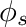
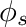
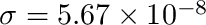
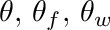
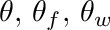
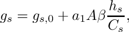
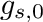

|
v1.3.14
|
Loading...
Searching...
No Matches
|
v1.3.14
|
| Dependencies | None. |
|---|---|
| CMakeLists.txt | set( PLUGINS "solarposition" ) |
| Header File | #include "SolarPosition.h" |
| Class | SolarPosition |
This plugin calculates the position of the sun, and also implements other models for solar fluxes as well as longwave fluxes from the sky. Model theory and equations are given in the sections below.
| Constructors |
|---|
| SolarPosition( helios::Context* context) |
| SolarPosition( int UTC, float latitude, float longitude, helios::Context* context) |
The SolarPosition class can be initialized by simply passing a pointer to the Helios context as an argument to the constructor. This gives the class the model access to the time and date currently set in the Context. The model must also know certain parameters about the simulated location, in particular the offset from UTC time, latitude, and longitude. A description of these parameters are given in the table below. These can be supplied using the second constructor listed in the table above. If the Context is the only argument supplied to the constructor, default values are assumed for UTC, latitude, and longitude (see table below).
| Input Parameter | Description | Convention | Default Behavior |
|---|---|---|---|
| UTC | Difference in hours between Coordinated Universal Time (UTC) for a particular location. See the figure below to determine a particular UTC offset. | UTC offset value is positive moving West. | +8:00 |
| latitude | Geographic coordinate that specifies the north–south position of a point on the Earth's surface in degrees. | Latitude is positive in the northern hemisphere. | +38.55 |
| longitude | Geographic coordinate that specifies the east-west position of a point on the Earth's surface in degrees. | Longitude is positive in the western hemisphere. | +121.76 |

The solar position model was implemented following the description in Chapter 1 of Iqbal (1983).
The day angle  given as the polar angle of the earth relative to the sun ( on Jan. 1) is calculated as
given as the polar angle of the earth relative to the sun ( on Jan. 1) is calculated as
where DOY is the Julian Day of the year.
The solar declination angle is then calculated as
 . (2)
. (2) The equation of time is calculated as
 , (3)
, (3) The hour angle is given by
with
 , (5)
, (5) and
 , (6)
, (6) Finally, the solar elevation angle is given by
and the solar azimuthal angle is given by
 . (8)
. (8) Note that  gives angles between 0 and
gives angles between 0 and  , so to get a  between 0 and
, so to get a  between 0 and  , we take
, we take  if
if  .
.
Clear-sky solar fluxes are calculated using the 'REST-2' model of Gueymard (2008). REST-2 is a state-of-the-art atmospheric transmission model that calculates the solar flux at Earth's surface after attenuation by water vapor, CO2, Ozone, NO2, and aerosols. The model partitions the total radiative flux into direct and diffuse components.
The longwave radiation flux emanating from the clear-sky is modeled following Prata (1996).
The model surmounts to calculating the effective emissivity of the sky as a function of precipitable water in the atmosphere
where  is the wator vapor path length (cm of precipitable water) which can be estimated following Viswanadham (1981) for example.
is the wator vapor path length (cm of precipitable water) which can be estimated following Viswanadham (1981) for example.
The downwelling longwave radiation flux on a horizontal surface is given by
 ,
, where  W/m2-K4, and  is the air temperature in Kelvin measured near the ground (say 2 m height).
is the air temperature in Kelvin measured near the ground (say 2 m height).
The direction of the sun can be queried in one of several ways: a Cartesian unit vector pointing in the direction of the sun, a spherical coordinate describing the direction of the sun, the elevation angle of the sun, the zenithal angle of the sun, and the azimuthal angle of the sun. The functions to query these quantities are given in the table below. Each of these functions calculates the solar direction based on the current time and date set in the Context (see setTime() and setDate()), and the UTC, latitude, and longitude specified in the SolarPosition constructor.
| Direction Quantity | Function |
|---|---|
| Unit vector pointing toward the sun. | SolarPosition::getSunDirectionVector() |
| Spherical coordinate vector pointing toward the sun. | SolarPosition::getSunDirectionSpherical() |
| Elevation angle of the sun (radians). | SolarPosition::getSunElevation() |
| Zenithal angle of the sun (radians). | SolarPosition::getSunZenith() |
| Azimuthal angle of the sun (radians). | SolarPosition::getSunAzimuth() |
Below is an example of how to use the SolarPosition mode to calculate the sun angle.
The solar flux can be calculated using the REST-2 model of Gueymard (2008) using the SolarPosition::getSolarFlux() function. IT IS CRITICAL TO NOTE THAT THE CALCULATED FLUX IS FOR A SURFACE PERPENDICULAR TO THE SUN DIRECTION. To get the flux on a horizontal surface, multiply by the cosine of the solar zenith angle.
Methods are available to get the incoming solar radiation flux perpendicular to the direction of the sun 1) for the entire solar spectrum (SolarPosition::getSolarFlux()), 2) for the PAR band (SolarPosition::getSolarFluxPAR()), and 3) (SolarPosition::getSolarFluxNIR()).
These functions takes several arguments needed for the model, which are listed in the table below.
| Argument | Description | Example Value |
|---|---|---|
| pressure | Atmospheric pressure in Pascals (near the ground). | 101,000 Pa |
| temperature | Air temperature in Kelvin (near the ground). | 300 K |
| humidity | Air relative humidity (near the ground). | 0.6 |
| turbidity | Angstrom's aerosol turbidity coefficient. | 0.05 |
The very similar function SolarPosition::getDiffuseFraction() calculates the fraction of the total flux that is diffuse. The fraction that is direct is simply one minus the diffuse fraction. This function takes the same arguments as SolarPosition::getSolarFlux().
Example code for using these solar flux functions is given below.
The predicted solar flux may not perfectly match local predicted solar fluxes due to uncertainty in the local turbidity value. There is a built-in routine to calibrate the turbidity based on measured radiative fluxes.
For the calibration, you must load radiation flux data into a timeseries within the Context. There must be at least one clear-sky day in the timeseries data, and the radiative fluxes must be for the entire solar spectrum in units of W/m2. You can then use the SolarPosition::calibrateTurbidityFromTimeseries() method. This method takes one argument, which is a string corresponding to the timeseries variable name containing the radiation flux data.
The REST2 model for solar fluxes was developed for clear-sky conditions and cannot directly be used when clouds are present. If incident solar radiation data is available (e.g., from a weather station), this can be used to calibrate the model to account for the possible presence of clouds. A simple model is described below for doing so.
Consider  to be the measured all-wave incoming solar radiation flux on a horizontal plane (clear or cloudy conditions), and  to be the predicted all-wave incoming solar radiation flux predicted by the REST2 model for clear-sky conditions perpendicular to the direction of the sun. This flux can be projected onto the horizontal plane according to
to be the measured all-wave incoming solar radiation flux on a horizontal plane (clear or cloudy conditions), and  to be the predicted all-wave incoming solar radiation flux predicted by the REST2 model for clear-sky conditions perpendicular to the direction of the sun. This flux can be projected onto the horizontal plane according to
![\[
R_{clear,h} = R_{clear}\mathrm{cos}\,\theta_s.
\]](form_185.png)
The diffuse fraction can be approximated as

where it is enforced that . The resulting flux that is output from the model is (flux perpendicular to the sun)

In order to enable flux calibration for cloudy conditions, you must 1) Load timeseries data into the Context containing the measured all-wave solar radiation flux. This data must cover the entire period of the simulation. 2) Call SolarPosition::enableCloudCalibration(), which requires a string corresponding to the timeseries data value reference in (1). Below is a code example:
An example of the above model applied to actual direct-diffuse partitioned radiation data using a shadowband radiometer is shown below. It should be emphasized that the above model is a relatively simple approximation that produces reasonable fluxes, but more accurate predictions are possible and require much more complicated models.

The downwelling longwave radiation flux from the sky can be calculated using the SolarPosition::getAmbientLongwaveFlux() function. This function takes the air temperature and humidity as arguments, which are defined in the same was as for the SolarPosition::getSolarFlux() function described above. The value returned by the function is the clear-sky downwelling longwave radiation flux on a horizontal surface in W/m2.